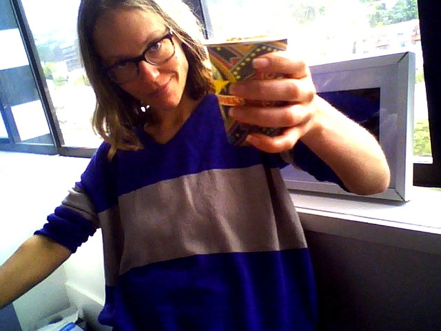

Daily Reflection Journal
When wings sprout from my spine then you’ll see.. you’ll all see…
At the beginning of each day
asking myself 'The Two Questions:
-
"What are my goals today?"
- "What are my challenges today?"
And at the end of each day:
- "Have I reached my goals for today?"
- "What have I learned today?"
FOUNDATIONS
Day One
Beginning of day questions:
Goals?
Study for atleast four hours. Get an understanding of key concept for the first sprint.
Challenges?
Figure out a rhythm of
the foundations course, AND what pace I am going to be getting into this first week.
End of day questions:
What I have learned today?
Figuring out a rhythm that works for me is going to be one of the biggest learning curves, aswell as
trying
to
communicate my specific needs to tutors without sounding like a special snowflake, or like I shouldn't be here
because I am "too fragile". I have always been more sensitive and that isnt changing this year or the next so
now
is
as good a time as any for me to be here and I can be quite stubborn about letting my singular sensitivities stop
me
as I think it allows many industries to rule out huge chuncks of the population instead of finding ways to work
with
them.
I studied for too long at once thismorning and burnt myself really hard with headaches and mind breaking fatigue for ther rest of the day. A bit of a narly beginning to the paper, but I suppose beginnings always are the hardest.
I studied for too long at once thismorning and burnt myself really hard with headaches and mind breaking fatigue for ther rest of the day. A bit of a narly beginning to the paper, but I suppose beginnings always are the hardest.
Have I reached my goals for today?
Got over the first and hardest challenge, diving in and starting. I managed to set up linux/abuntu in my
terminal
and vscode after a lot of headaches, got an idea of the framework and what topics to get into and how to reflect
on each day as I go.
Day Two
Beginning of day questions:
Goals?
Set up my github and repository cloning. Get in the habit of reflecting and intentional learning as I go.
Take more
breaks more often. Troubleshoot ways to mainting my focus for longer without burning myself out (change of
scenery,
coffee, breaks, interaction, etc). Make progress into the first sprint and outline a plan of what to learn by the
end of week one and when the group meeting is/who are my homegroup members.
Challenges?
Interacting with homegroup members and figuring out meeting schedules at the same time as learning sprints.
(hard to focus on two different elements in one day, single minded task brain). Reminding myself to take breaks
regularly and then getting back into the flow without burning out.
End of day questions:
What I have learned today?
I work better when I can follow my energy, rather than pushing my body through a wall, though that might
be irrelevant once bootcamp begins. That Bootcamps with any missed time being problematic are kinda inherantly
sexist when nearly half the population has bad period pains/other symtoms once a month. That I work better with
others to bounce of (specifically comfortable others not just anyone, often others im not used to with make me
anxious and stall me). That it's really hard to try and carry the emotional labour of my friends and study
fulltime and get payed for neither aswell as cook and clean... Also learnt DOM much better and made a Journal in
HTML and CSS and got more familiar with both.
Have I reached my goals for today?
Yeah, I still feel like I need to do longer hours but im reaching my burnout point, or well beyond and
stopping there. Physical ability doesn't rly seem relevant in capitalist society so... this may be a silly
observation to bother noting.
Day Three
Beginning of day questions:
Goals?
Get ore family with the terminal commands. finally Get Ubuntu to install everything without failing on
me.
Try understand what is happening with homegroups and discord.
Challenges?
Probs do some JS leanring even though that is ahead
a few sprints because it's what I will struggle the most with and don't want to drown when I get there. Weeks
one
and two I can probably handle even as not my primary goal set as I am pretty familiar with HTML and CSS, as you
can maybe tell, though I do enjoy the journaling tasks, being from a Fine Arts BFA/Creative Cultures and
Ethics/Media Studies/Journalism electives background.
End of day questions:
What I have learned today?
When my body gets sick there is not much I can do but stop and take care of it, though it's hard to turn
off the little voice that says 'you can't keep up' yada yada, when lying in bed feeling like you are dying! And
at
which point does that start being true? A cursed way we have to think indeed! Capitalism my behated.
Have I reached my goals for today?
I got into the discord Whai kohort and got my required roles finally! I didn't do as much work as I would
like, but only due to getting very sick.
Day Four
Beginning of day questions:
Goals?
Ask for help from facilitators and fix this Ubuntu connection error please!
Challenges?
Shy about asking for help from strangers/intimidating people especially when I feel like I should have
solved this at the start.
End of day questions:
What I have learned today?
Have I reached my goals for today?